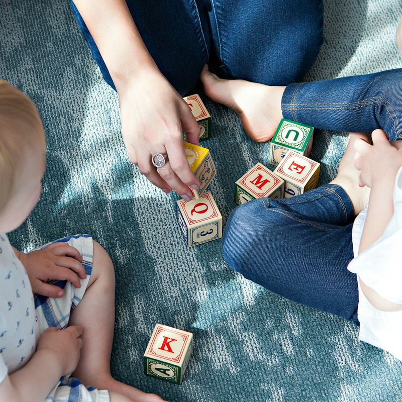

10 תיוגים שהורים נותנים לילדים שלהם ומה אפשר להגיד במקום
״הוא כזה עקשן״. ״היא ממש דרמטית״. ״הוא פשוט לא מקשיב״. לפעמים התיוג יוצא לנו כמעט בלי לשים לב.
אבל כשאנחנו עוברות מלתאר מי הילד ללנסות להבין מה קורה לו עכשיו, גם התגובה שלנו יכולה להשתנות.
עשרה תיוגים
10 תיוגים נפוצים ומה אפשר להגיד במקום
התיוג מתאר מי הילד. המשפט שבא במקומו מתאר מה קורה לו עכשיו.
-
במקום: ״אתה בכיין״
אפשר להגיד״אני רואה שאתה בוכה כי קשה לך עכשיו״
הוא לא בכיין. כרגע קשה לו והוא מבטא את זה בבכי.
-
במקום: ״אתה עושה דווקא״
אפשר להגיד״אתה ממש רוצה לבחור בעצמך. הפעם אני מחליטה, ואתה יכול לבחור בין אלה.״
אפשר לתת מקום לרצון שלו להשפיע, גם כשלא הכול נתון לבחירה.
-
במקום: ״אתה קנאי״
אפשר להגיד״אתה רוצה גם אותי עכשיו. אני רואה אותך.״
קנאה היא רגש שהוא חווה ברגע מסוים, לא משהו שמגדיר אותו.
-
במקום: ״אתה מפונק״
אפשר להגיד״אתה יודע לעשות את זה לבד, והפעם אתה רוצה שאעזור לך.״
גם ילד שכבר מסוגל לעשות משהו בעצמו יכול לפעמים לרצות אותנו לידו.
-
במקום: ״אתה דרמטי״
אפשר להגיד״זה ממש קשה לך עכשיו.״
מה שנראה לנו קטן יכול להרגיש לו כרגע ממש גדול.
-
במקום: ״אתה עקשן״
אפשר להגיד״ממש רצית שזה יקרה אחרת וקשה לך לשנות עכשיו.״
במקום לתאר אותו כעקשן, אנחנו מתארות את הקושי שקורה ברגע הזה.
-
במקום: ״די להיות נודניק״
אפשר להגיד״אני יודעת שאתה עדיין רוצה את זה. התשובה שלי נשארת לא.״
אפשר להבין שקשה לו לשחרר ועדיין להישאר עם הגבול.
-
במקום: ״אתה ביישן״
אפשר להגיד״אתה יכול לקחת את הזמן. תצטרף כשתרגיש מוכן.״
במקום להגדיר אותו מול אחרים, אנחנו נותנות לו זמן להרגיש בנוח.
-
במקום: ״אתה לא מקשיב״
אפשר להגיד״קשה לך לעצור עכשיו. אני אעזור לך לעבור למה שצריך.״
לפעמים הוא שמע אותנו מצוין, הקושי הוא לעצור את מה שהוא עושה ולעבור לדבר הבא.
-
במקום: ״אתה בררן״
אפשר להגיד״לא בא לך לאכול את זה עכשיו.״
במקום להפוך את היחסים שלו עם אוכל לתכונה שלו, אנחנו פשוט מתארות את מה שקורה כרגע.
הערה חשובה
לא צריך לפחד מכל מילה שיוצאת לנו מהפה
המטרה היא לא להתחיל לבדוק את עצמנו על כל משפט.
אלא לזכור שיש הבדל בין להגיד לילד מי הוא לבין לתאר מה קורה לו עכשיו.
״אתה עקשן״ הופך את ההתנהגות לזהות. ״קשה לך לעבור הלאה״ משאיר מקום לכך שברגע אחר יהיה לו קל יותר.
וזה אחד העקרונות שמובילים אותי בהדרכת הורים: לא לעצור רק במה שהילד עושה אלא לנסות להבין מה הוא מספר לנו דרך ההתנהגות.
כי כשברור לנו יותר מה קורה מתחת, הרבה יותר ברור לנו גם איך להגיב.
וכשיש לך שני ילדים קטנים, להבין מה קורה מתחת להתנהגות זה רק חלק מהסיפור
כי ברגע האמת את עדיין צריכה לדעת מה לעשות: כששניהם צריכים אותך ואת צריכה להחליט למי לגשת קודם. כשהצבת גבול והגיע בכי או טנטרום. כשהם רבים, חוטפים או מקנאים ואת רוצה להבין מה באמת קורה שם לפני שאת מגיבה. וכשאותה התנגשות חוזרת שוב ושוב ואת רוצה להבין מה אפשר לשנות עוד לפני שהיא מתפוצצת.
בדיוק בשביל הרגעים האלה יצרתי את ״הורות בדאבל״, המדריך המעשי שלי לחיים עם שני ילדים קטנים, שילמד אותך להבין מה כל ילד באמת צריך ולדעת איך להגיב גם כששניהם צריכים אותך יחד.
כדי שלא תצטרכי בכל פעם מחדש לנחש מה נכון לעשות ותוכלי להוביל את הרגעים האלה עם יותר בהירות ופחות צעקות ואשמה.
להכיר את ״הורות בדאבל״כרגע המדריך במחיר השקה לזמן מוגבל.

אם עוד לא הכרנו
שקמה דגרי
אני שקמה דגרי, מדריכת הורים ויועצת שינה מוסמכת לגיל הרך, בוגרת מצטיינת בהכשרות להדרכת הורים ולייעוץ שינה בגישה ההוליסטית, ואמא לצמודים בהפרש של שנה וחודש.
מתוך החיים עם שני קטנטנים והעבודה עם משפחות יצרתי את שיטת ״הורות בדאבל״, דרך שעוזרת להבין מה כל ילד צריך ולדעת איך להגיב גם כששניהם צריכים אתכם יחד.
אני בעלת תואר ראשון במדעי ההתנהגות ותואר שני בייעוץ ארגוני, ומנהלת את קהילת ״אמאל׳ה צמודים״, שבה חברים יותר מ־300 הורים. עוד עליי · הליווי האישי